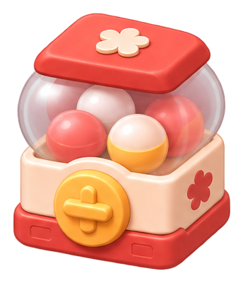

SEED 문서
GitHub 정본 보기문서상 제안, 확정, 구현, 실기기 검증은 각각 다릅니다.
정본의 타이포·버튼·상태·공간 구성·에셋을 한 곳에서 검증합니다.
SEED Lab은 정의의 거울입니다. 문서별 목적, 의존성, 승인 상태, 정본 원문을 확인하고 아래 실험과 연결합니다.
SEED 정본 색인 로딩 중
문서상 제안, 확정, 구현, 실기기 검증은 각각 다릅니다.
상태 안내: 문서 전체의 status와 개별 조항의 승인 범위는 다릅니다. 실제 합의는 D-011/D-012/D-013과 v0.15로 확인하고, 실행/시각 검증은 별도입니다.
같은 계열에서 역할·크기·상태를 비교합니다. 공식 수치와 미승인 후보는 구분합니다.
01 · C-TEXT + F-TYPE
의미 역할 5개, 시각 스케일 10개. 서체는 기존 시스템 폰트.
title / root · 26/34 · 700title / standard · 18/26 · 600클랜 상세
display / hero · 24/32 · 700이번 주의 기록
display / number · 24/32 · 7001,240
section · 18/26 · 700오늘의 활동
body / item · 16/24 · 600일본어 단어 복습
body · 16/24 · 400목표를 나누어 실천하고 진행을 기록합니다.
caption / support · 14/20 · 400어제 오후 6:20 · 최근 업데이트
caption · 12/18 · 500보조 안내
body / number-small · 16/24 · 60012,600
의미상 제목과 실제 크기는 독립입니다. 긴 소개문을 Hero로 키우거나 문단 전체를 브랜드색으로 강조하지 않습니다. 숫자는 같은 표기 폭을 사용합니다.
02 · C-ACTION + P-ACTIONS
기존 허용 6종. 높이·아이콘·상태·너비는 독립 속성입니다.
주요 행동 1개
중립적 대표 확정
일반 실행
보조 행동
부가 설명·이동
기존 서브브랜드 톤
아이콘 + 라벨
Loading / 자리 유지
Disabled / 실제 비활성
Brand Weak와 Brand Outline은 과거 문서에만 존재한 후보로, 아래 실험 영역에서만 활성화됩니다. Critical은 의미색/대비 승인 전 미구현입니다.
03 · C-STATUS
상태는 표시하고, 선택은 컨트롤로 처리합니다.
실제 값과 표시 폭
620 / 1,000
Micro · 6px
Default · 10px
Featured · 12px
초과 기여는 숫자로 남고, 막대는 100%까지만 채웁니다.
04 · C-FIELD / C-CHECK / C-RADIO / C-SEGMENT
컴포넌트 모양보다 동작의 의미를 먼저 구분합니다.
선택 상태
같은 데이터의 보기 전환
오늘 · 기본 정보
05 · C-LIST + C-IMAGE
같은 정보 축, 다른 콘텐츠. 미디어는 상태와 비율을 보존합니다.
이번 주 학습 기여
기록 예제 · 비교 행
여러 줄로 이어질 수 있는 활동 설명을 포함한 예제
메타 정보를 숨기지 않고 줄바꿈합니다.
보조 행동이 따로 있는 정적 행
부모 행에는 가짜 클릭 없음

학교 사물함
A1 / contain

나무 상자
A1 / contain

빛나는 상자
A1 / contain
06 · C-SURFACE + C-ICON
공간 배치가 아닌 표현 역할 10종. 아이콘은 원본 SVG를 재사용.
Plain
배경 없는 섹션
Solid
독립된 정보 묶음
Outlined
경계를 드러내는 면
Subtle
약한 그룹
Inset
안쪽 구역
Raised
상위 면
Media
이미지 중심
Reward
보상 의미에 한정
Overlay
겹침 우선면
이름·상태·이미지는 유지하고 배치 방식만 바꿉니다
기본기본고급
기본격자: 이미지를 동시에 비교할 때. 동일한 프레임과 정보 슬롯을 사용합니다.
Plain과 Solid를 비교하고 정보의 책임을 구분합니다
배경 없이 간격으로만 구획
독립 경계가 필요할 때만 면 추가
화면 목적에 따라 Header · 본문 · 고정 영역을 구분합니다
첫 번째 섹션은 Plain. 목적이 다른 정보만 다음 섹션으로 분리합니다.
Root: 주 스크롤 영역과 전역 탐색 공간을 구분합니다. 시각적 슬롯만 시연하며 이동 기능은 없습니다.
0 · 부분 · 목표 · 초과 · 조회 불가 · 로딩을 구분합니다
실제 수치 620, 표시 폭 62%
동일한 기본 크기, 명확한 강조 차이
버튼을 눌러 시각 상태를 확인하세요. 데이터는 저장하지 않습니다.
체크 해제 · 기본 보기
버튼 개수와 가로·세로 배치를 바꾸되 Action 규격은 그대로 유지합니다
A1 단일 오브젝트. A2 배너 장면으로 취급하지 않습니다
manifest 기반으로 불러오며 임의 아이콘을 생성하지 않습니다
시각 강도와 의미만 비교. 페이지 배치와 독립